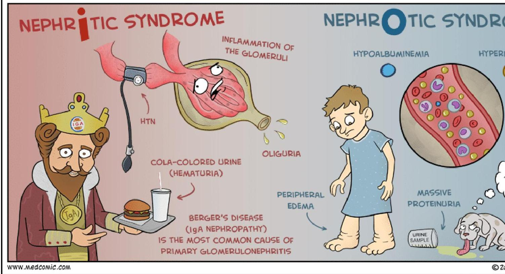

💧
Topic 11
Nephrotic Syndrome
01
Overview & Pathophysiology
Definition: Nephrotic syndrome (nephrosis) is a clinical state characterized by massive proteinuria, hypoalbuminemia, hyperlipidemia, and edema.
Diagnostic Criteria
-
Proteinuria: >3.5 g/day (Adults) OR >40 mg/m²/h (Children).
-
Hypoalbuminemia: Serum albumin < 2.5 g/dL.
-
Hyperlipidemia: Elevated serum cholesterol and triglycerides.
-
Edema: Generalized swelling (anasarca).
Pathophysiology
The core defect is damage to the glomerular filtration barrier (endothelium, basement membrane, or podocytes). This increases permeability to plasma proteins, allowing them to leak into the urine.
- Albumin Loss: Massive loss leads to decreased plasma oncotic pressure.
- Fluid Shift: Fluid moves from the vascular space to interstitial tissues, causing edema.
- Liver Response: The liver increases synthesis of proteins and lipids to compensate, leading to hyperlipidemia.
02
Clinical Manifestations

Fig. 11.1: Clinical features of Nephrotic Syndrome (Source: MedComic).
Signs and Symptoms
-
Edema: Often the first sign. Starts periorbital (around eyes) in the morning, progressing to legs and generalized body swelling (ascites, pleural effusion).
-
Weight Gain: "Chubby" appearance due to fluid retention, often masking malnutrition.
-
Urine Changes: Frothy or foamy urine (due to protein). Decreased volume.
-
Systemic: Anorexia, irritability, fatigue, pallor.
-
Susceptibility to Infection: Immunosuppression leads to frequent respiratory infections.
03
Causes & Diagnosis
Causes
Primary (Renal)
- Minimal-change nephropathy (Most common in children).
- Focal segmental glomerulosclerosis (FSGS).
- Membranous nephropathy.
Secondary (Systemic)
- Diabetes Mellitus.
- Systemic Lupus Erythematosus (SLE).
- Amyloidosis.
- Infections (Hep B/C, HIV, Malaria).
Diagnostic Evaluation
| Test Category | Findings |
|---|---|
| Urine Studies | Protein/Creatinine ratio > 2-3 mg/mg. Dipstick: 3+ to 4+ protein. |
| Blood Studies | Hypoalbuminemia (< 2.5 g/dL), Hyperlipidemia, Hyponatremia (dilutional), High Platelets. |
| Genetic Testing | Mutations in NPHS1/NPHS2 (for congenital/infantile cases). |
04
Medical Management
Pharmacologic Therapy
-
1Corticosteroids (First-line): Prednisone is the standard therapy to induce remission. Typically daily for 6 weeks, then alternate days.
-
2Diuretics: Furosemide (Lasix) to manage severe edema. Used with caution to avoid hypovolemic shock.
-
3Albumin (Plasma Expanders): IV Albumin to increase oncotic pressure and pull fluid from tissues, followed by a diuretic.
-
4Immunosuppressants: Cyclophosphamide or Cyclosporine for steroid-resistant or frequently relapsing cases.
Dietary Management
- Sodium Restriction: Essential during edema phase.
- Fluid Restriction: Careful moderation during severe edema.
- Protein: Moderate protein intake (high protein is no longer routinely recommended due to kidney stress).
05
Nursing Management
Fluid Volume Excess (Edema)
- Monitor I&O: Strict intake and output recording.
- Daily Weights: Same time, scale, and clothing. Best indicator of fluid status.
- Abdominal Girth: Measure daily at umbilicus level (ascites).
- Assessment: Check for pitting edema and respiratory distress (pleural effusion).
Skin Integrity & Infection Risk
- Skin Care: Inspect regularly. Keep clean and dry. Avoid tight clothing.
- Positioning: Turn q2h to prevent pressure sores on edematous tissue.
- Infection Control: Isolate from infectious individuals (visitors/staff). Strict handwashing.
- Monitoring: Watch for fever or signs of peritonitis/pneumonia.
Nutrition & Home Care
- Diet: Encourage appetizing, nutrient-dense small meals (anorexia is common).
- Urine Testing: Teach parents/patient to monitor urine protein with dipsticks at home.
- Education: Medication adherence (steroid tapering), signs of relapse (frothy urine, edema).
Knowledge Check
Test Your Understanding
Complete this quiz to assess your comprehension of Nephrotic Syndrome.
Loading quiz...